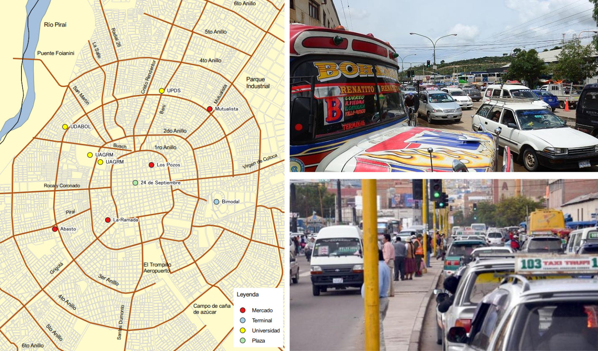

Este mapa muestra algunos recorridos realizados por nuestro equipo de investigación en
Cochabamba. Recorrimos la ciudad usando varias líneas de transporte público hacia lugares donde
trabajamos o estudiamos.
Las líneas de transporte conectan puntos alejados de la ciudad con el centro, donde las rutas se
aglomeran y, en algunos casos, se sobreponen.
En este mapa vemos que varias de ellas pasan cerca de la UMSS y el centro histórico.
Esta es una fotografía aérea de una de las recurrentes trancaderas en la avenida Oquendo, donde
se encuentra el ingreso al campus de la Universidad.
Aquí, en horas pico, los pasajeros pueden perder hasta veinte minutos recorriendo solamente un
par de cuadras. Las vías se saturan muy rápido porque centenares de taxitrufis pasan por el
mismo lugar.
Lo mismo sucede en La Paz. Este mapa muestra los recorridos de nuestro equipo en un día
cotidiano, y vemos claramente que las rutas van desde barrios bastante alejados, aglomerándose
en el centro.
Los minibuses que tomaron los miembros de nuestro equipo pasan por la unión de la avenida Camacho
con la Mariscal Santa Cruz, en una zona muy importante para la urbe paceña.
Pero, como se ve en la imagen, la gran concentración de líneas de transporte público crea
trancaderas, no sólo en las vías centrales, sino también en las colaterales.
Y es que, mientras en otras ciudades del mundo el tráfico está ligado al uso excesivo del
vehículo privado; en Bolivia, tiene que ver con la forma en la que se organiza el transporte
público, que es el principal modo de transporte para los ciudadanos.
Por ejemplo, este gráfico compara las principales formas en las que se mueven las personas de La
Paz y Cochabamba.
La mayoría usa el transporte público: taxitrufis, minibuses y micros.
El problema es que nuestro transporte público es un servicio desregulado, provisto por
asociaciones de transporte que no planifican sus rutas con mucha eficiencia.
Este mapa muestra las rutas de varios minibuses, micros y taxitrufis en La Paz. Es bastante claro que los transportistas han diseñado sus rutas para llevar a las personas desde los barrios más alejados hasta las zonas centrales.
Pero si miramos con atención, nos damos cuenta que, para llevar a las personas hacia su destino,
las líneas siguen caminos contorsionados por los barrios periféricos; y, ya en el centro, pasan
por las mismas calles y avenidas, ocasionando congestionamiento vehicular.
Pero no sólo es La Paz. Todas las ciudades bolivianas tienen el mismo problema: calles centrales
saturadas por un sistema de transporte que es accesible para los ciudadanos, pero que no es
eficiente con los tiempos de viaje, y genera embotellamientos.
¿Qué rol está jugando el transporte público en el problema del tráfico en Bolivia? Y, más
importante, ¿qué podemos hacer para solucionar el problema de los embotellamientos en nuestras
ciudades?
El problema del tráfico vehicular en Bolivia: congestión, política y planificación.
Iniciemos con una pregunta básica: ¿cómo nacen los embotellamientos?
Desde la ingeniería del transporte, tenemos dos explicaciones fundamentales: (1) los efectos en cadena de la desaceleración de un vehículo en una fila de automóviles, y (2) la sobrecarga de la infraestructura vial.
Podemos entender la primera explicación con un ejemplo. Si miramos un una fila de varios automóviles que van hacia la misma dirección, basta que uno desacelere un poco para ocasionar una reacción en cadena; que lleva a que todos los que están detrás de él desaceleren y, eventualmente, se detengan.
Formación de un embotellamiento fantasma. No hay ningún obstáculo en la vía, pero por el hecho de que un vehículo desaceleró en un momento determinado, creó un embotellamiento permanente.
Como es prácticamente imposible que todos conduzcan a la misma velocidad y distancia entre sí, las trancaderas nacen de forma natural. Los conductores desaceleran para no chocar, para frenar en un semáforo, para dar pie a un peatón, o para cargar pasajeros, que en Bolivia es particularmente caótico porque no existen zonas de parada específicas. Cualquiera que sea el motivo de la desaceleración, si existen automóviles suficientes para ello, los embotellamientos aparecerán.
La segunda explicación tiene que ver con la saturación de la infraestructura vial, porque cada calle y avenida tiene un número máximo de vehículos que puede transportar en un periodo de tiempo determinado. De hecho, se estima que un carril típico puede transportar aproximadamente 2000 vehículos por hora sin colapsarse. Las trancaderas ocurren cuando este número se sobrepasa, que en el caso boliviano tiene que ver con que muchas líneas de transporte público desembocan en las mismas calles.
Además, la capacidad de los vehículos es otro factor que influye en la sobrecarga de las vías.
De acuerdo a Freddy Koch, especialista en movilidad urbana sostenible, una forma de evitar la saturación de la infraestructura vial es impulsar el uso de vehículos de alta capacidad. Esto quiere decir que, en lugar de promover el uso de automóviles que pueden transportar a lo sumo 8 o 12 personas; se debería implementar sistemas de buses (o BRT por sus siglas en inglés), como el Pumakatari, de modo que una sola unidad pueda llevar entre 40 a 60 pasajeros.
Sin embargo, como nos indica el experto, el problema es que las líneas de transporte público usan vehículos de muy baja capacidad, como los taxitufis y minibuses, que satisfacen la demanda de movilidad con más vehículos de los necesarios. Este es un gran problema para las áreas metropolitanas de La Paz, Cochabamba y Santa Cruz, donde vive el 45% de la población boliviana, y la demanda del transporte diaria está entre dos a tres millones de personas, que nuestro transporte público satisface con decenas de miles de automóviles.
Para ilustrar este punto, en el siguiente gráfico comparamos cuántos vehículos de se necesitarían para mover a 1000 personas, en función a su capacidad. Como se puede ver, los taxi trufis y minibuses, requieren al menos 100 unidades para esta tarea; en comparación al Pumakatari que lo lograría solo con 17 unidades.
La siguiente simulación de tráfico vehicular combina los principios de los que hablamos anteriormente. Es una vía central a la que llegan muchas líneas de transporte público, la cual tiene una zona de atasco que obliga a los conductores a disminuir la velocidad al pasar por ahí. Si no hay muchos automóviles usando la vía, no hay trancaderas; pero esto cambia en las horas pico, cuando el número de vehículos incrementa. Puedes usar el control para aumentar o disminuir el flujo de vehículos. Observa qué es lo que sucede.
Ahora que entendimos brevemente algunos elementos que ocasionan el tráfico, tenemos pendientes unas cuantas preguntas: ¿Cómo es que las asociaciones de transporte crean sus rutas? ¿Qué retos implicaría para las mejoras de nuestro sistema de transporte?
¿Por qué nuestro transporte público recorre las mismas vías?
En Bolivia, las rutas del transporte responden de manera directa a la urbanización y creación de nuevos barrios. Los transportistas modifican sus líneas y trayectos a medida que crece la ciudad y la consecuente demanda de movilidad.
En este sentido, Juan Cabrera destaca, en una reciente investigación, que los transportistas modifican sus rutas a pedido de barrios en las periferias; y es por esta razón que nuestro sistema de transporte es muy accesible para la gente que vive en las zonas más alejadas.
Pero esto no es algo nuevo. Esta forma de trazar rutas se ha venido configurando en todo el país desde hace más de 80 años. De hecho, las primeras asociaciones y líneas de transporte urbano, que nacieron al rededor de 1940, ya tenían el propósito de satisfacer la demanda de transporte que iba creciendo en las periferias. Este es el caso de, por ejemplo, la línea de micros 2, fundada en La Paz en 1938.
Además, Bianca de Marchi, una investigadora que trabajó la configuración histórica de nuestros sistemas de transporte, señala que la lógica de apropiarse de determinadas rutas para satisfacer la demanda de comunidades alejadas, también se encuentra presente en muchos sindicatos agrarios, que suelen tener “secretarios de transporte”.
A ello se debe sumar que, para obtener la mayor cantidad de ganancias posible, cada línea organiza sus
recorridos para pasar por puntos nodales de la ciudad, con tal de llevar y recoger la mayor cantidad de
pasajeros. Como resultado, los trayectos se superponen, concentran y desembocan en las mismas calles y
avenidas, generando caos vehicular.
Nuestro transporte público se aglomera alrededor de mercados, universidades, o zonas de gran importancia
laboral. Por ejemplo hay estudios que estiman que por la zona del mercado La Ramada, en Santa Cruz de la
Sierra, circulan
hasta 40 líneas de transporte público por la misma vía. Lo mismo sucede en Cochabamba, pues
sobre la Avenida Ayacucho, donde se encuentra la terminal de buses, pasan al rededor de 50 líneas de
taxitrufis y minibuses.

A la derecha: puntos de alto de tráfico vehicular en Santa Cruz. A la izquierda, fotografías del tráfico en la Avenida Ayacucho, donde se encuentra la terminal de buses, en Cochabamba.
Pero el transporte público también se concentra en las vías que unen áreas importantes en las ciudades. En el caso de La Paz, por ejemplo, existen grandes embotellamientos en las avenidas que conectan las laderas y municipios que componen el área metropolitana. Así, dos zonas de atasco, por ejemplo, son la Plaza Isabel La Católica, que vincula Sopocachi con Miraflores; y la Avenida Pérez Velasco, que conecta la ciudad de La Paz con El Alto, vía Autopista.
Es así que las rutas de nuestro transporte público se caracterizan por ser contorsionadas en los extremos, para recoger gente de barrios periféricos, pero luego se concentran en los mismos lugares, ocasionando graves problemas de tráfico y pérdida de tiempo para los pasajeros y los propios transportistas, sobretodo en horas pico. Fernando Prado, planificador urbano cruceño con muchos años de experiencia, lo describe así:
La gente está feliz porque prácticamente la recogen de su casa, pero no se da cuenta que este sistema le hace perder tiempo. Es un sistema muy ineficiente porque estas líneas van viboreando por los barrios, pasando por los mercados, y por las universidades; lo que significa una hora de viaje o una hora y media para llegar al centro.
Por nuestra parte, utilizando datos disponibles del transporte público en diferentes ciudades, elaboramos el siguiente mapa de calor, que muestra las zonas de mayor concentración de líneas del transporte público. Puedes usar los controles para explorarlo y revisar la ciudad que te interesa.
Pero, ¿qué han estado haciendo los gobiernos municipales para solucionar el problema?
Muchos han tratado de solucionar el tráfico con la construcción de pasos a desnivel, corredores,
viaductos y ampliación de avenidas.
Desde El
Alto, pasando por Tarija
y, también en Santa
Cruz, muchos alcaldes, recientemente, han inaugurado y anunciado la construcción de
grandes infraestructuras vehiculares en zonas críticas, pero no hay muchas garantías de que esto
solucione el problema.
Por ejemplo, Cochabamba es una de las ciudades que más pasos a desnivel, viaductos y ampliaciones
de avenidas ha construido en los últimos años.
Aquí, una zona crítica para el tráfico y donde se hicieron enormes inversiones en
infraestructura vehicular es la Avenida 6 de agosto por donde, según nuestros cálculos, pasan 27
líneas de transporte público.
Pero estas obras no solamente terminaron en escándalos de corrupción como
el famoso caso del puente caído, sino que tampoco fueron capaces de solucionar los
embotellamientos.
Esta fotografía compara dos imágenes satelitales de la 6 de agosto: una antes y otra después de
la construcción de infraestructuras vehiculares.
No sólo el tráfico no se ha arreglado, sino que parece haber empeorado. Este fenómeno es algo que
se ha estudiado bastante desde el urbanismo y las matemáticas del transporte.
Sin embargo, la restricción vehicular y las multas no se aplican del todo para las asociaciones y
líneas del transporte público, quienes resisten a las regulaciones.
Es bastante claro que, para mejorar el tráfico en Bolivia, se tiene que intervenir en el funcionamiento
de las asociaciones que proveen el servicio del transporte. ¿Pero, qué retos hay para lograrlo?
El primer y más grande obstáculo tiene que ver con el manejo político de la situación. Pues, el sector
del transporte tiene mucha fuerza social y política, que usa para evadir o crear normas, según la
conveniencia de su sector. Y los gobiernos municipales les hacen muchas concesiones, con tal de obtener
apoyo político a cambio.
La relación clientelista entre transportistas y alcaldías, es bastante crítica y obstaculiza las reformas
al tráfico. Fernando Prado nos contó cómo esto obstaculiza las reformas en Santa Cruz de la Sierra:
Todos los políticos le hacen la venia a los transportistas porque son muchos votos.
Imagínense que en Santa Cruz, por ejemplo, hay como 10.000 micros y, con los parientes y amigos que
trabajan ahí, ya son 50.000 personas. Es mucha gente, son muchos votos y mucho poder, que (los
transportistas) usan para paralizar la ciudad si hay reformas que no les gustan. Los transportistas que
apoyan al gobierno municipal se benefician de ese poder político. Entonces, ningún alcalde se anima a
poner un poco de orden o cambiar el sistema.
El pacto político entre gobiernos municipales y las asociaciones de transportistas no sólo obstaculiza la solución del tráfico; sino que también, ante la falta de regulaciones y fiscalización al sector, da pie a que los choferes trabajen en condiciones sumamente precarias y, en muchos casos, encubre el abuso por parte de sus dirigentes. Como nos indica Freddy Koch, el condicionamiento por parte de las dirigencias, sucede desde el momento en el que uno se afilia a un sindicato o cooperativa de transporte:
En el transporte público, los dirigentes viven de los transportistas y los transportistas viven de su trabajo. ¿Qué significa eso? Por ejemplo, para ganarse el derecho de pertenecer a uno de estos grupos y entrar a trabajar de chofer hay un monto que se paga. Y no estamos hablando de poca plata. En La Paz puede costar ente 5 y 10.000 dólares. En Cochabamba, entre 15.000 y 20.000 dólares. Para el dirigente, que administra ese dinero, basta que entren personas a trabajar, porque así ya están ganando. Pero el chofer no se beneficia directamente de estos montos, y para recuperar (su inversión), intenta “exprimir” su capacidad de negocio en el horario de trabajo que le asigna el sindicato. ¿Cómo lo hace? Adelantándose, engañando a otros minibuses, apurando a la gente, subiendo y bajando pasajeros donde pueda o haciendo trabajo sobre horas.
No se sabe a dónde va el dinero (que pagamos para entrar), muchos dirigentes se enriquecen pues con esos dineros, son pocos los beneficios para nosotros. Nunca rinden cuentas ni nada, nosotros los choferes no sabemos nada, al final solo nos dedicamos a trabajar mientras los dueños se enriquecen con nuestro trabajo y los dirigentes se vuelven millonarios con los aportes y los ingresos que entran en cada sindicato. Tienen que ver no más sus casas que parecen mansiones y sus vagonetas modernas.
Mientras tanto, los choferes trabajan jornadas extenuantes y ganan a destajo. Una investigación de ONU-Habitat Bolivia, señala que la mayoría de los choferes no tienen seguros de salud, vacaciones u otras prestaciones sociales y están sometidos a jornadas laborales extensas, de hasta 12 horas diarias.
Explorando soluciones
El problema del tráfico en Bolivia es muy complejo. Estamos ante un sistema que resuelve las necesidades de transporte de los ciudadanos, pero de una manera muy ineficiente, dado que usa demasiados vehículos con muy poca capacidad, que desembocan en las mismas vías y ocasionan embotellamientos. ¿Cómo podemos cambiar este sistema? ¿Es posible?
Preguntamos a nuestros entrevistados cuáles podrían ser las soluciones para el tráfico en nuestras ciudades. Qué debería hacer la planificación urbana para intervenir en el problema.
Para Juan Cabrera, investigador urbano, no hay mucho que hacer. Nos indicó que, en su opinión, el sistema de transporte informal es “muy eficiente, en términos de accesibilidad y precio” y que, para él, “la planificación urbana es ficción”.
Fernando Prado, nos dio varias ideas. Como él indica, no se podrían hacer modificaciones enormes “de golpe”, dado que es un sistema de transporte que se ha consolidado a lo largo de muchos años, en los que justamente los gobiernos municipales abandonaron la cultura de planificación urbana y los transportistas ganaron mucho poder. Lo que se debe intentar es normar y negociar con el sector poco a poco, y que ellos mismos vean los beneficios que puede traer una reforma.
Prado indica que, en el contexto de la subida de precios y la crisis económica actual, el sector del transporte comenzará a pedir aumentos de tarifas del transporte; lo que permitirá abrir negociaciones con el sector, para mejorar el servicio. Una de sus sugerencias fue modificar el trazado de líneas de los transportistas. Tratar de enrectar las partes contorsionadas y superpuestas de las rutas; de manera que pueda mejorarse el tiempo de viaje y se eviten las trancaderas, no sólo para los pasajeros, sino también para los propios choferes.
Nos indica que también se debería buscar la interoperabilidad y conexión entre líneas. Que se permita al ciudadano usar un sólo boleto para viajar entre líneas, que a su vez no pasen ni sobrecarguen las vías principales.
Por su parte, Freddy Koch nos indica que de lo que se trata es de brindarle más alternativas a la gente, ya sea promoviendo reformas en el actual sistema de transporte que tenemos, apoyándonos en la iniciativa privada o buscando modos de transporte público nuevos, como en La Paz lo fueron los Pumakataris y el Teleférico. En este sentido, Freddy nos dice que, a diferencia de otros países, Bolivia tiene mucho capital social para trabajar una reforma del transporte. Y es que, pese a la gran ineficiencia de nuestro actual sistema, la gente sigue utilizando y apuesta por el transporte público para moverse.
En Bolivia, el problema del tráfico está íntimamente ligado a nuestro actual sistema de transporte público. Este, por la forma en la que se ha configurado, si bien es accesible y llega a muchos barrios, lo hace con rutas contorsionadas que hacen perder tiempo, usa demasiados automóviles con baja capacidad de transporte, y sus rutas se concentran en las mismas vías, creando embotellamientos frecuentes.
El sistema actual de transporte público no es eficiente, pero pese a ello, las alcaldías no son capaces de intervenir en el sector, que es un gran aliado político. Pero este criterio de gobierno clientelista necesita cambiar, pues el problema del tráfico urbano en las ciudades bolivianas está creciendo y empeorando. Hoy en día, se estima que el 80% de los bolivianos viven en ciudades, 45% de ellos en tres áreas metropolitanas. En la medida que no se encaren los retos políticos, no se planteen soluciones y no se recupere la planificación urbana, el tráfico sólo empeorará y nuestro sistema se volverá insostenible. A medida que se aproximan las elecciones de 2025, y con los próximos resultados del censo, es urgente encarar un debate y reformas al problema del tráfico y el transporte público, para mejorar la calidad de vida de los ciudadanos.
Autoría
Valeria Peredo (redacción y coordinación del proyecto)
Mayra Gutiérrez, Adhemar Conde, Mateo Zubieta, Alex Ojeda (Procesamientos SIG y mapas)
Leydi Quispe, Natalia Rocha, Tania Condori, Abigail Roque, Miguel Alvarez, Adrián Delgado (Recolección de
datos y notas periodísticas)
Entrevistados
Freddy Koch, experto en movilidad urbana sostenible.